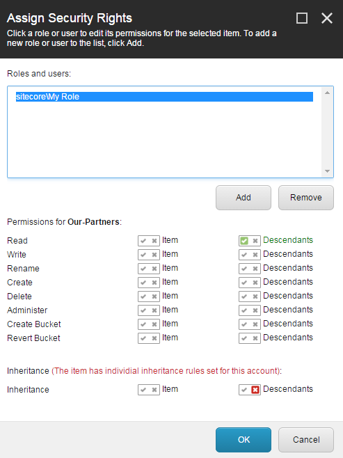
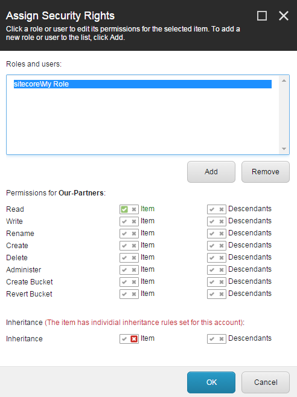

The Inheritance access right
Guide to configuring Sitecore inheritance access rights and the rules for conflicting access rights.
The Inheritance access right is a setting that determines whether an item can inherit its ancestors' access rights for a specific security account.
You can use the Inheritance access right to streamline the process of assigning access rights. In certain situations, this can spare security administrators the tedious task of assigning each role explicit access rights to every item in the content tree.
By default, an item inherits the access rights that are assigned to the items that are higher up the content tree (the ancestors). For example, a security administrator can configure the security settings of a single item and all the items that are lower down the content tree (the descendants) automatically inherit the same settings. However, if there is an item that should not inherit any security settings from its ancestors, you can use the Inheritance access right to deny the item the right to inherit the security settings.
Important
Because items by default inherit the access rights from their ancestors, you never have to actually grant an item the Inheritance access right.
This topic covers:
If there are conflicting inheritance or descendant access rights assigned to a user or the roles that a user is a member of, the following rules apply:
Rule | Example |
|---|---|
An Inheritance access right that is denied to a role or a user overrules the Inheritance access rights specified on other roles or users. | If a user is a member of two roles, one that allows the user to inherit an access right to an item and another that does not allow the user to inherit the same access right to the item, then the user is denied the access right. |
Access rights explicitly granted for an item, on either a user or a role, overrule the Inheritance access rights and any rights assigned to the descendants of the parent item. | If a user is a member of two roles, one that does not allow the user to inherit an access right to an item and another that explicitly grants the same access right, then the user is granted the access right. |
Explicitly assigned access rights on a user account overrule explicitly assigned access rights on a role that the user is a member of. | If an access right on a user account is explicitly granted to the descendants of an item and one of the roles that the user is a member of has the same access right explicitly denied for the descendants of the item, the access right is granted to the descendent item. |
The following examples show you how to control the access rights to items and their descendants with the Inheritance access right.
Deny an account all access rights to an item and its descendants
This example shows how you can deny an account the access right to an item and all its descendants.
For example, you can grant the My Role security account the Write, Rename, Create, and Delete access rights to the About Us item and then deny the Our-Partners subitem the right to inherit these access rights.
To do this in the Security Editor, you deny the Our-Partners item the Inheritance access right. This denies the selected account every access right to the item and its descendants, including the Read access.
In the Access Viewer, you can view how the settings in the Security Editor affect the access rights for the descendants of the About-Us item.
In this example, the My Role account no longer has any access to the Our-Partners item or its subitems and because the Press-Lounge item is still allowed to inherit the access rights of its ancestors, the My Role account still has the access rights to that item.
To see the details of how access rights have been granted or denied for a specific item, you can click the access right and the details appear in the pane on the right of the Access Viewer. In this example, the Write access for the Our-Partners item has been denied the right to inherit the settings from the About-Us item.
Note
The Inheritance access right will not deny the user access to the item in question if the user is a member of another role that grants them access to the item. In addition, the access rights that are explicitly assigned to an item, overrule the inheritance settings.
Grant an account access rights to an item and deny it to the descendants
This example describes how you can grant access rights to an item but deny them to the item's descendants. For example, you can grant the My Role account all access rights to the Our-Partners item but deny everything but the Read access right to the Inventory-Partners and Construction-Partners descendants.
To do this, you must assign the access rights explicitly to the Our-Partners item in the Assign Security Rights dialog box:
In the Permissions for section, allow descendants to inherit the Read access rights. This setting overrules the settings in the Inheritance section.
In the Inheritance section, deny only the descendants (and not the item) to inherit the access rights from the parent item.

In the Security Editor, the two icons for the access rights of the Our-Partners item indicate that you have specified different access rights and inheritance settings for the item and its descendants. The upper icon displays the access rights for the item and the lower icon displays the access rights for its descendants. In this example, the My Role account has full access rights to the Our-Partners item but only Read access rights to its descendants.
In the Access Viewer, you can click an access right to view the details of the settings in the pane on the right:
Deny an account access rights to an item and grant them to its descendants
This example describes how you can use the Inheritance access right to ensure that a security account has access rights to the descendants of an item but not to the item itself. For example, you can deny the My Role account access rights to the Our-Partners item but allow the account full access to its Inventory-Partners and Construction-Partners descendants.
To do this, you assign the access rights explicitly to the Our-Partners item in the Assign Security Rights dialog box:
In the Permissions for section, grant the Read access rights to the item. This setting overrules the settings in the Inheritance section.
In the Inheritance section, deny only the item the right to inherit the access rights (and not the descendants).

In the Access Viewer, you can view the details of the settings. The My Role account does not have full access to the Our-Partners item but does have full access to its two descendants. This is achieved efficiently by only using the Inheritance access right and not by denying and granting access rights on each item.